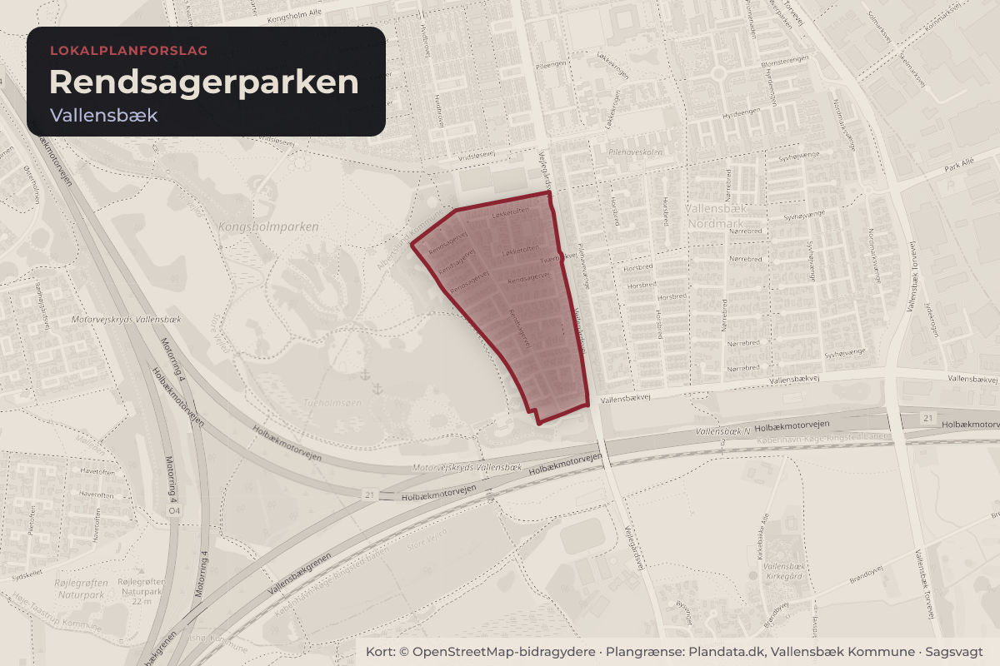
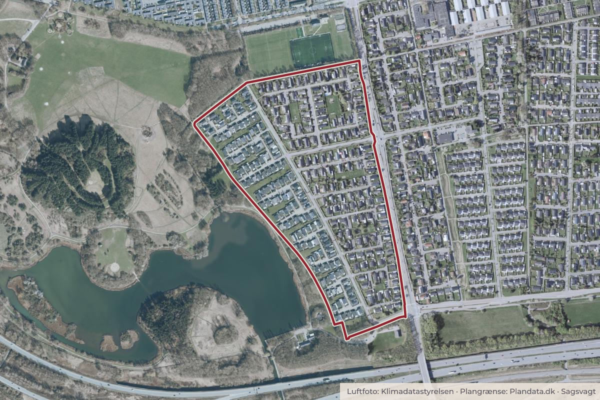

Besluttet 24. juni, Kommunalbestyrelsen, Vallensbæk
KTMU - Forslag til Lokalplan nr. 110 - Rendsagerparken

Kort: © OpenStreetMap-bidragydere. Plangrænse: Plandata.dk, Vallensbæk Kommune.

Kort fortalt
- Hvem
- Kommunalbestyrelsen, Vallensbæk Kommune
- Hvornår
- Onsdag 24. juni 2026
- Status
- Besluttet. Godkendt med Klima-, Teknik- og Miljøudvalgets bemærkning.
Er noget forkert her? Skriv til os
Læs hele sagen Kommunens egen tekst
Indstilling
Sagen bliver behandlet i Klima-, Teknik- og Miljøudvalget, Økonomiudvalget og
Kommunalbestyrelsen.
Center for Teknik og Byudvikling indstiller,
at forslag til Lokalplan nr. 110 – Rendsagerparken bliver sendt i offentlig høring i
otte uger fra den 6. juli til 31. august 2026
at der i høringsperioden er orienteringsmøde den 20. august på Korsagergård
at planen bliver sendt i offentlig høring uden miljørapport
Behandling i Klima-, Teknik- og Miljøudvalget 2. juni 2026
Anbefales med bemærkning om, at orienteringsmødet afholdes den 19. august 2026.
Behandling i Økonomiudvalget 17. juni 2026
Anbefales med Klima-, Teknik- og Miljøudvalgets bemærkning.
Sagsfremstilling
Rendsagerparken er planlagt i starten af 70’erne ud fra Lokalplan 5 og en række tinglyste
deklarationer. Bebyggelsen er opført efter en række standarddeklarationer i perioden 19641974. Lokalplan nr. 110 skal sikre tidssvarende plangrundlag for den ensartede bebyggelse for
ejerlauget Rendsagerparken.
Som den eneste grundejerforening i kommunen har ejerlauget gennem deklaration særlig
mulighed for at fastsætte bindende fælles regler for, hvordan bygninger og haver skal se ud
inden for deres område. Da reglerne ikke står i en lokalplan, kan planloven ikke direkte
anvendes til at lovliggøre overtrædelser af reglerne. Dette har skabt udfordringer for ejerlauget
i forbindelse med håndhævelse af ejerlaugets retningsregler, da der er tale om en privatretlig
aftale mellem ejerlauget og grundejere.
Dette bliver ændret med denne lokalplan, så bestemmelser for bebyggelse og friarealer
fremover vil blive reguleret af Planloven og kommunen som planmyndighed, der overtager
ejerlaugets ansvar for, at reglerne bliver overholdt. Lokalplanen aflyser deklarationerne på nær
forpligtelsen til medlemskab af ejerlauget.
Grundejerne får de samme muligheder for at om- og tilbygge deres huse og indrette deres
haver som i dag. I delområde B, Rendsagervej 2-100, lige numre, får de større grunde ny
mulighed for at lave tilbygning til huset vinkelret på den eksisterende bygning. Tidligere var det
kun muligt at lave en tilbygning i forlængelse af den eksisterende bygning.
Forvaltningen har løbende drøftet de nye muligheder for til- og ombygning med ejerlaugets
bestyrelse, som har givet et væsentligt bidrag til forslaget set fra grundejernes vinkel.
Under arbejdet med lokalplanforslaget har forvaltningen og bestyrelsen for ejerlauget været på
gåtur med beboerne i området. Mange af forslagene fra turen har forvaltningen taget med i
planforslaget.
Miljøvurdering
Forvaltningen har foretaget en screening efter ”Lov om miljøvurdering af planer og
programmer”. Screeningen viser, at de få og begrænsede ændringer i muligheder for byggeri
og anlæg som lokalplanen vil give mulighed for, kun vil få ubetydelig eller ingen indvirkning på
miljøet.
Økonomi- og personalemæssige konsekvenser
Ingen bemærkninger.
Sammenhæng til udviklingsstrategien
Sagen har sammenhæng til delvision 2, Grønt byliv med central beliggenhed. Denne sag
bidrager til grønnere byliv ved at bevare enfamiliehuse i egne haver tæt på naturen omkring
Tueholmsøen.
Sammenhæng til FN's verdensmål
Kommunikation
Lokalplanforslaget bliver sendt i høring hos samtlige grundejere og beboere i området i otte
uger fra den 6. juli til 31. august 2026. Høringsperioden er forlænget fra fire til otte uger på
grund af sommerferien. Der bliver i høringsperioden holdt et orienteringsmøde den 20. august
2026 på Korsagergård.
Retsgrundlag
Planloven.
Lov om miljøvurdering af planer og programmer.
Beslutning
Godkendt med Klima-, Teknik- og Miljøudvalgets bemærkning.
Kilde: Vallensbæk Kommune, Kommunalbestyrelsen, referat fra mødet onsdag 24. juni 2026, punkt 15. Læs den originale sag hos kommunen.